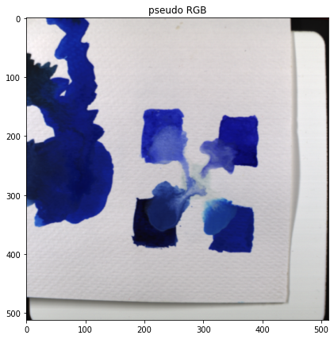

from iqcampy import download, filetreeReading your IQcam data
Taking a first look at the Specim IQ hyper spectral image file format
The Specim IQ hyperspectral camera (IQcam) saves its raw and computed data in an open data format. Very nice! The iqcampy package is designed to help you to explore the data. In order to learn about the way the IQcam data is formatted and can be read you can download a demo dataset iqcam_2021-02-03_005_4x-aquarelblauw-FL-01.zip.
Import the download() and filetree() functions. Running download() will: 1) create a subdirectory downloads/, 2) change our working directory to this folder, 3) download a zip file with a dataset, and 4) extract the contents of the zip file.
data_path = download()Current working directory: "downloads"
(1/2) Found existing zipfile: iqcam_2021-02-03_005_4x-aquarelblauw-FL-01.zip (skipping download)
(2/2) Extracting zip file...
Ready!We can now explore the complete contents of the dataset with the filetree() function.
filetree(data_path)iqcam_2021-02-03_005_4x-aquarelblauw-FL-01/
├── .validated
├── capture/
│ ├── DARKREF_iqcam_2021-02-03_005.hdr
│ ├── DARKREF_iqcam_2021-02-03_005.raw
│ ├── WHITEREF_iqcam_2021-02-03_005.hdr
│ ├── WHITEREF_iqcam_2021-02-03_005.raw
│ ├── iqcam_2021-02-03_005.hdr
│ └── iqcam_2021-02-03_005.raw
├── iqcam_2021-02-03_005.png
├── manifest.xml
├── metadata/
│ └── iqcam_2021-02-03_005.xml
└── results/
├── REFLECTANCE_iqcam_2021-02-03_005.dat
├── REFLECTANCE_iqcam_2021-02-03_005.hdr
├── REFLECTANCE_iqcam_2021-02-03_005.png
├── RGBBACKGROUND_iqcam_2021-02-03_005.png
├── RGBSCENE_iqcam_2021-02-03_005.png
└── RGBVIEWFINDER_iqcam_2021-02-03_005.png
A closer look at this file tree makes clear that the measured data (in the capture folder) consists three basic datasets: a dark reference, a white reference, and the actual iqcam capture:
capture/
├── DARKREF_iqcam_2021-02-03_005.hdr
├── DARKREF_iqcam_2021-02-03_005.raw
├── WHITEREF_iqcam_2021-02-03_005.hdr
├── WHITEREF_iqcam_2021-02-03_005.raw
├── iqcam_2021-02-03_005.hdr
└── iqcam_2021-02-03_005.raw Each dataset consists of .hdr text file with some meta data and a .raw file with the numerical values.
Use the functions read_darkref(), read_whiteref() and read_capture() to read these ‘raw’ datasets.
from iqcampy import read_darkref, read_whiteref, read_capture, compute_reflectancedark_meta, nms, dark_spectrum = read_darkref(data_path)
white_meta, nms, white_spectrum = read_whiteref(data_path)
capture_meta, nms, capture_cube = read_capture(data_path)These functions return numpy arrays and additional meta data in the well-known ENVI format for hyper spectral images.
print(capture_meta)ENVI
description = {Data recorded with Specim IQ}
samples = 512
lines = 512
bands = 204
header offset = 0
file type = ENVI
data type = 12
interleave = BIL
sensor type = SPECIM IQ
byte order = 0
default bands = {70,53,19}
latitude = 0.00000000
longitude = 0.00000000
acquisition date = 03-02-2021
errors = none
binning = {1,1}
tint = 98
fps = 10.2041
We can subsequently compute the reflectance spectral data cube with the compute_reflectance() function. Mathematically, the reflectance \(R\) is calculated form the absolute intensity \(I\) by subtracting the dark reference spectrum \(D\) and dividing by the white reference spectrum \(W\).
\[ R = \frac{I - D}{W - D} \]
reflectance_cube = compute_reflectance(capture_cube, dark_spectrum, white_spectrum)This data cube is consists of a stack of 204 square images of 512 x 512 pixels at 204 wavelength channels.
reflectance_cube.shape(512, 512, 204)Here are the wavelengths as listed in the ENVI header .hdr file.
# 204 wavelenghths (nm)
print(nms)[ 397.32 400.2 403.09 405.97 408.85 411.74 414.63 417.52 420.4
423.29 426.19 429.08 431.97 434.87 437.76 440.66 443.56 446.45
449.35 452.25 455.16 458.06 460.96 463.87 466.77 469.68 472.59
475.5 478.41 481.32 484.23 487.14 490.06 492.97 495.89 498.8
501.72 504.64 507.56 510.48 513.4 516.33 519.25 522.18 525.1
528.03 530.96 533.89 536.82 539.75 542.68 545.62 548.55 551.49
554.43 557.36 560.3 563.24 566.18 569.12 572.07 575.01 577.96
580.9 583.85 586.8 589.75 592.7 595.65 598.6 601.55 604.51
607.46 610.42 613.38 616.34 619.3 622.26 625.22 628.18 631.15
634.11 637.08 640.04 643.01 645.98 648.95 651.92 654.89 657.87
660.84 663.81 666.79 669.77 672.75 675.73 678.71 681.69 684.67
687.65 690.64 693.62 696.61 699.6 702.58 705.57 708.57 711.56
714.55 717.54 720.54 723.53 726.53 729.53 732.53 735.53 738.53
741.53 744.53 747.54 750.54 753.55 756.56 759.56 762.57 765.58
768.6 771.61 774.62 777.64 780.65 783.67 786.68 789.7 792.72
795.74 798.77 801.79 804.81 807.84 810.86 813.89 816.92 819.95
822.98 826.01 829.04 832.07 835.11 838.14 841.18 844.22 847.25
850.29 853.33 856.37 859.42 862.46 865.5 868.55 871.6 874.64
877.69 880.74 883.79 886.84 889.9 892.95 896.01 899.06 902.12
905.18 908.24 911.3 914.36 917.42 920.48 923.55 926.61 929.68
932.74 935.81 938.88 941.95 945.02 948.1 951.17 954.24 957.32
960.4 963.47 966.55 969.63 972.71 975.79 978.88 981.96 985.05
988.13 991.22 994.31 997.4 1000.49 1003.58]A first test to see if we are doing fine is to compute a pseudo RGB image from the default bands = {70,53,19} in the ENVI meta data, and plot the image.
pseudo_rgb = reflectance_cube[:,:, [70, 53, 19]] # red, green, blueimport matplotlib.pyplot as pltfig, ax = plt.subplots(figsize=[7, 7])
ax.imshow(pseudo_rgb / pseudo_rgb.max()) # avoid clipping
ax.set_title('pseudo RGB');
FUNCTIONS
compute_reflectance
compute_reflectance (capture_cube, dark_spectrum, white_spectrum)
Compute spectral reflectance cube from raw data.
Returns: reflectance_cube
read_reflectance
read_reflectance (data_path)
Read precomputed computed reflectance header, cube data and rgb image.
Returns: meta, nms, reflectance_cube, rgb_img
read_capture
read_capture (data_path)
Read cube capture header and data.
Returns: meta, nms, capture_cube
read_whiteref
read_whiteref (data_path)
Read WHITEREF header and data.
Returns: meta, nms, white_spectrum
read_darkref
read_darkref (data_path)
Read DARKREF header and data.
Returns: meta, nms, dark_spectrum
filetree
filetree (data_path, include_files=True, force_absolute_ids=True, show=True)
Prints a file tree with the contents of the data_path folder.
download
download ()
Download Specim IQcam demo dataset zipfile and extract its contents.